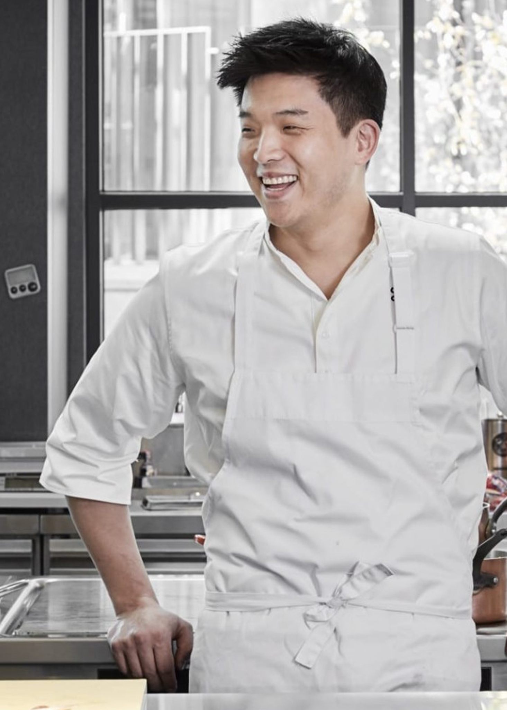

코스코스가 활짝 핀 뒤뜰에서 즐겁게 뛰어 놀던 어릴 적 추억이 아직도 생생하게 떠오릅니다.
형제 자매들과 뛰놀던 그곳에서의 기억은 언제나 제 마음속 깊이 가장 행복한 시절로 남아 있습니다.
모수에서의 경험 역시 여러분의 마음속 깊숙이 자리 잡을 수 있었으면 합니다.
안성재 셰프는 한국에서 태어나 이북 출신 할머니 손에 자라며 할머니께서 손수 만들어준 전통 이북음식을 비롯한 다양한 장르의 음식을 접할 수 있었습니다.
이후 13세에 가족과 함께 미국 캘리포니아로 이민을 가 중식 레스토랑을 운영하시는 부모님을 도와 처음 주방을 접하며 셰프의 꿈을 키우기 시작하였고, 이라크에서 군복무를 마친 후에는 본격적으로 셰프의 길을 걷기 시작했습니다.
Urasawa, TFL, Benu 등 유수의 미쉐린 스타 레스토랑에서 커리어를 쌓은 후, 2015년 샌프란시스코에서 아이아 요리를 본인만의 색으로 풀어낸 Contemporary American Cusine을 선보이는 < MOSU >를 오픈, 이듬해 오픈 8개월 만에 미쉐린 가이드 샌프란시스코에서 1스타를 획득하는 성과를 이루어냈습니다.
한국에 있는 가족들과 함께 하고자, 샌프란시스코의 < MOSU >를 서울로 옮겨 < MOSU SEOUL >이라는 새로운 이름의 레스토랑을 다시 시작하게 되었습니다.